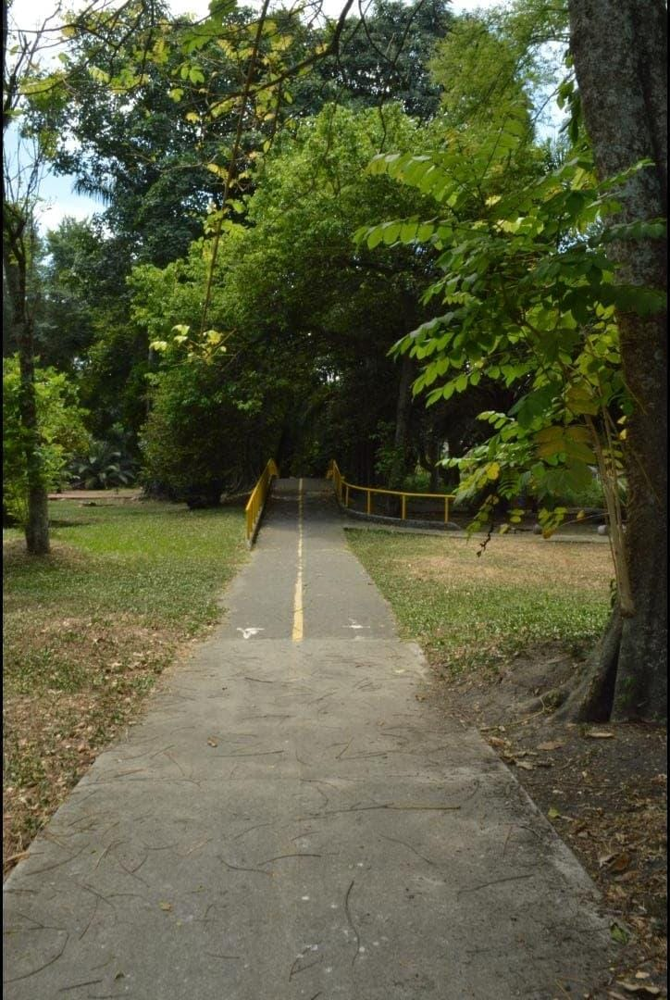
Proyecto de diseño gráfico
Realización de fotografías aplicando diferentes técnicas de composición, iluminación y encuadre para obtener imágenes de buena calidad.
Aprendiz de Integración de Contenidos Digitales
Soy aprendiz SENA del programa Técnico en Integración de Contenidos Digitales.
Me interesa la edicion, la fotografia, la tecnología y la creación de contenidos digitales.
Ver mis proyectos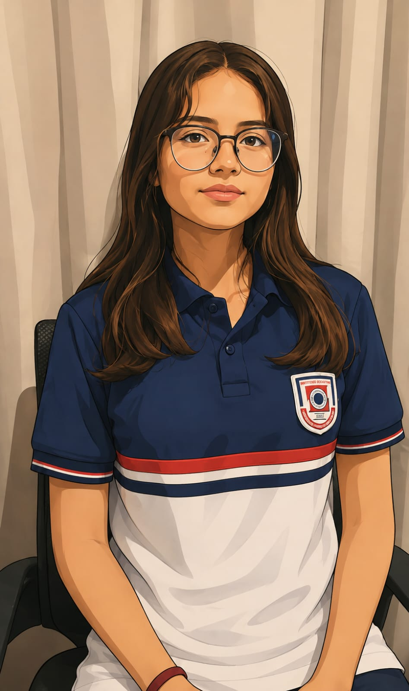
Soy aprendiz del programa Técnico en Integración de Contenidos Digitales. Durante mi proceso de formación he desarrollado conocimientos relacionados con diseño gráfico, edición de imágenes, producción multimedia, diseño web y creación de contenidos digitales.
Me interesa continuar fortaleciendo mis habilidades creativas, tecnológicas y fotograficas para desarrollar proyectos digitales útiles, visuales y atractivos.
A continuación presento algunos trabajos realizados durante mi proceso de formación.

Realización de fotografías aplicando diferentes técnicas de composición, iluminación y encuadre para obtener imágenes de buena calidad.
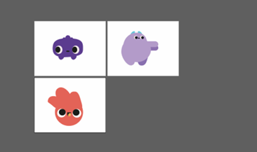
Creación de una ilustración digital utilizando herramientas de diseño para desarrollar una composición creativa y visualmente atractiva.
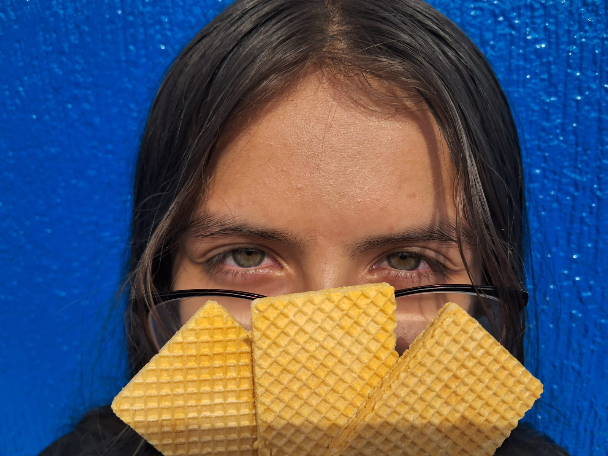
Realización de fotografías pensadas para un anuncio publicitario, buscando mostrar el producto de una manera llamativa y adecuada para comunicar el mensaje.
Algunos trabajos y ejercicios realizados durante mi proceso de formación.
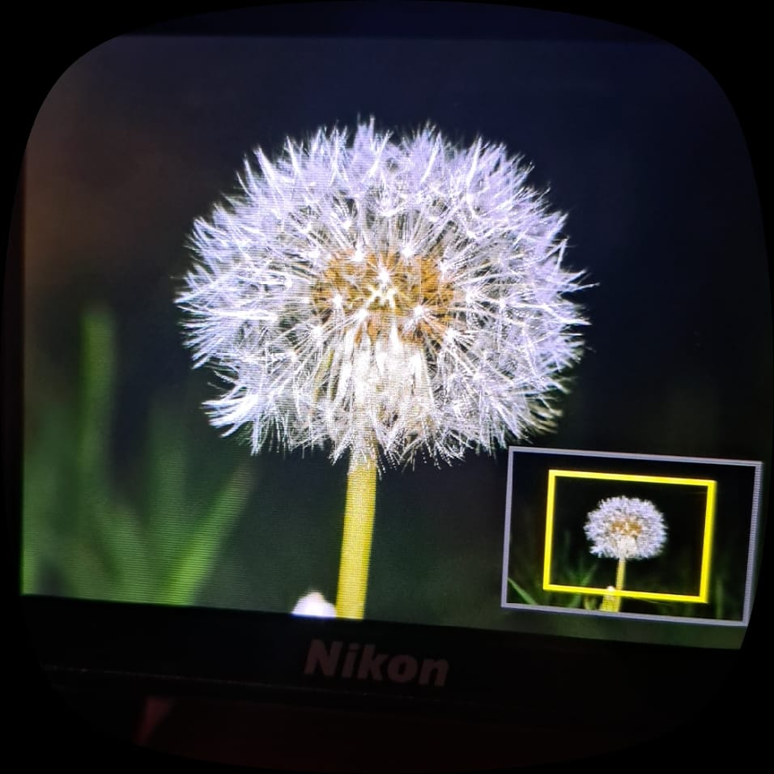
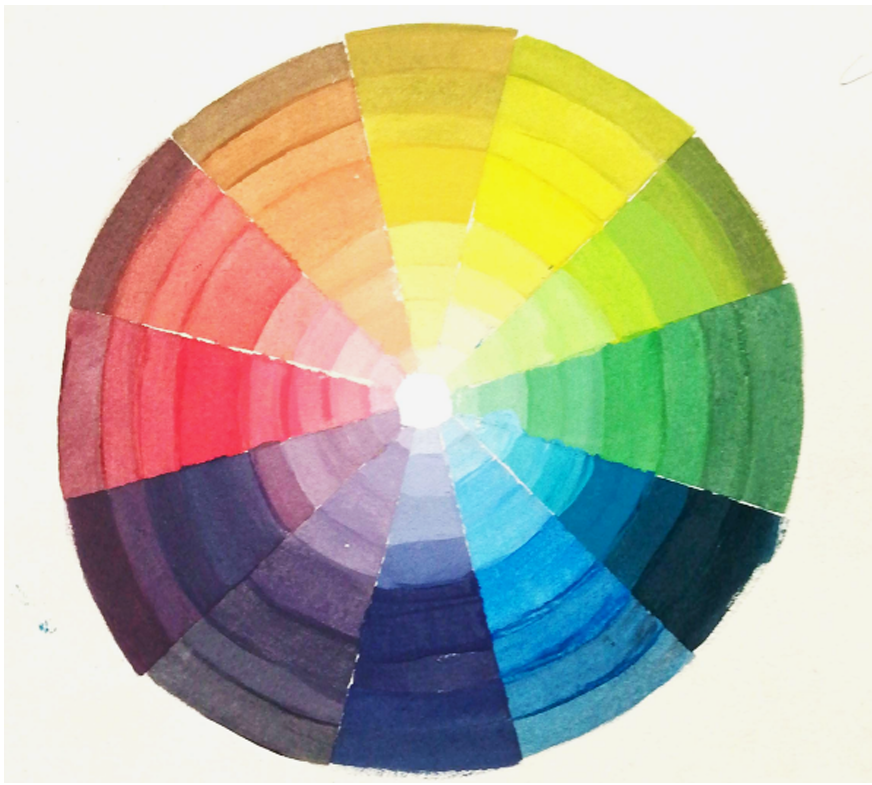
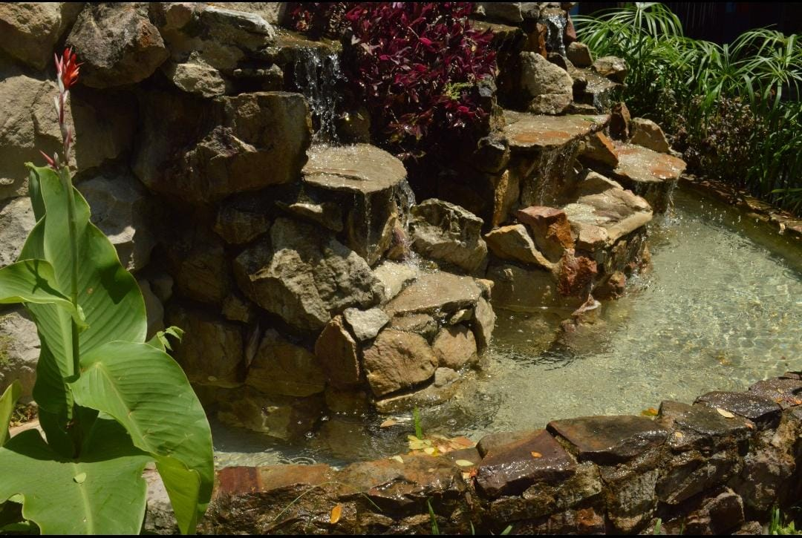
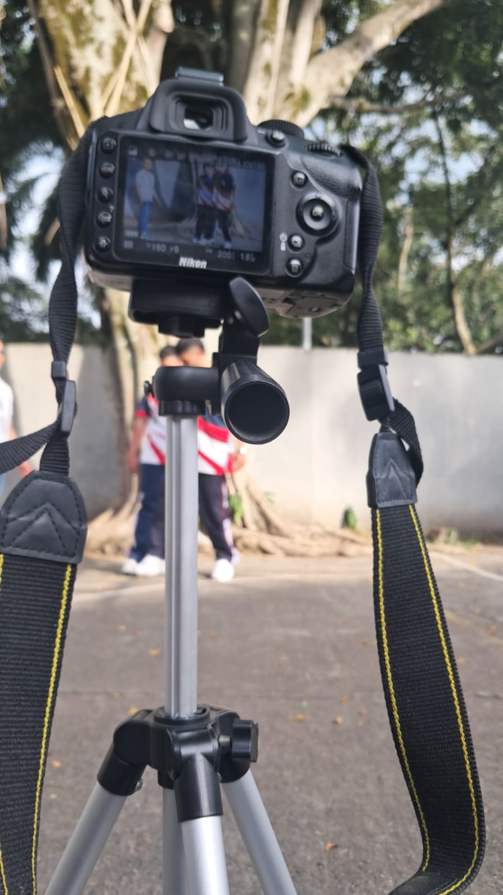
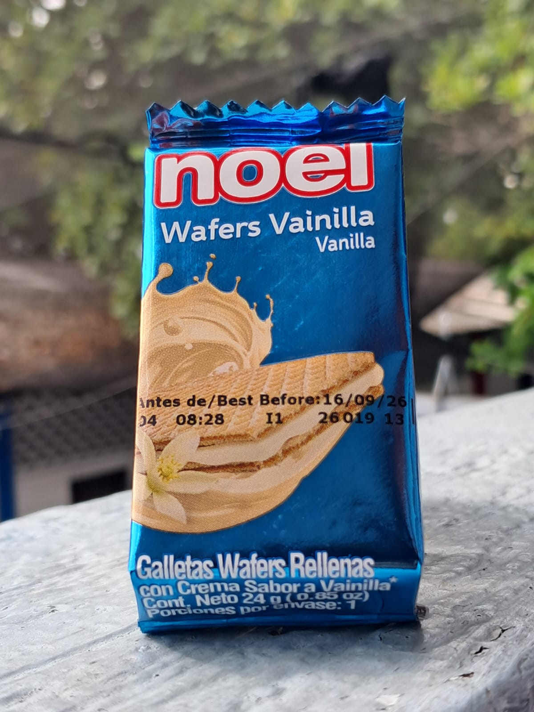
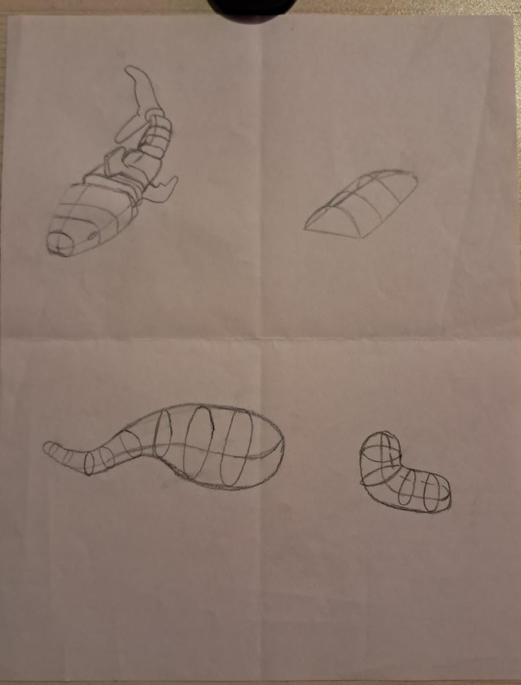
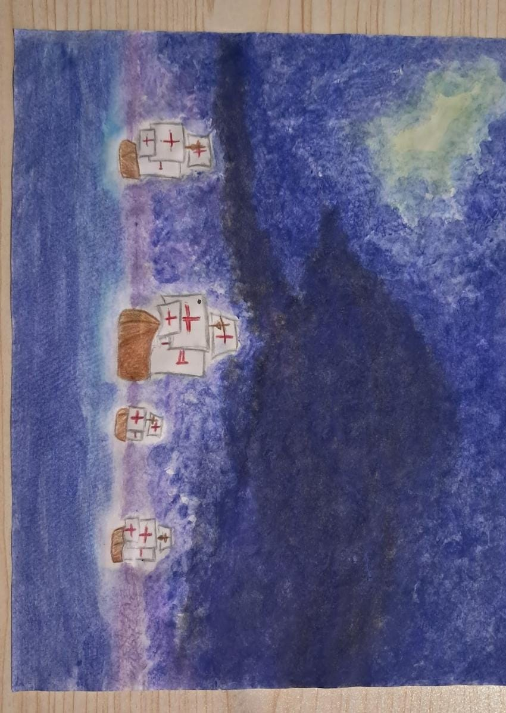